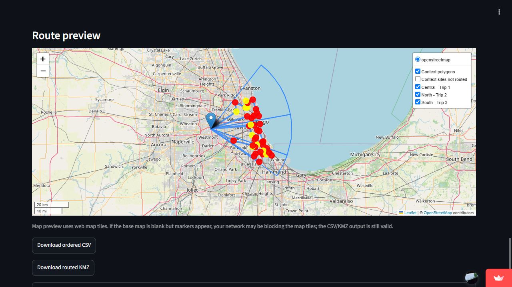
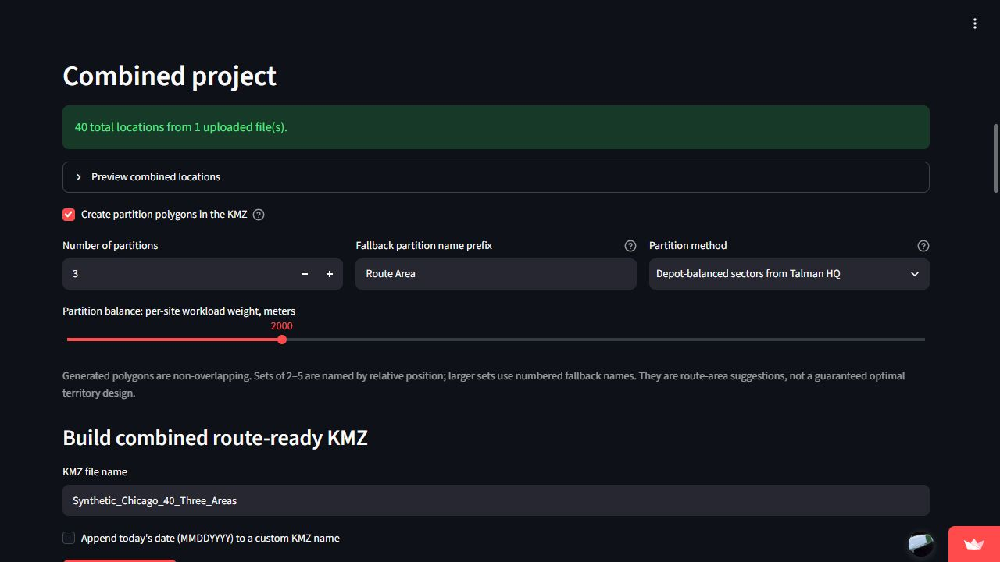
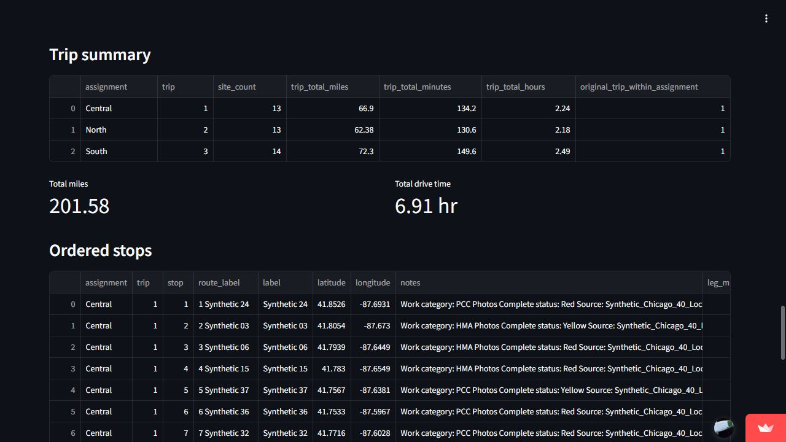

03 / Field planning software / Public web application
Professional work · Talman Consultants, LLC
FieldPlan: turn work lists into maps and driving routes
I developed FieldPlan for Talman Consultants, LLC to turn scattered work lists and existing maps into usable field assignments. The engineering work connects input cleanup and work-readiness rules to geographic partitioning, road-network routing, and exports that crews can take into the field.
- My contribution
- Workflow design, Python development & iteration
- Tools
- Python · Streamlit · OR-Tools · Geospatial data
- Outcome
- Public Streamlit application for field planning

Goal: make the work list actionable
A route is only useful if its stops represent the work that actually needs doing. FieldPlan accepts raw Excel workbooks, coordinate CSV files, and existing KML/KMZ maps together so users can assemble one project without first converting every source into the same format.
I built a workflow that identifies usable columns, uses supplied coordinates or geocodes location text, retains map context where possible, and exposes skipped records and conflicts for review. The output is a common set of labeled locations that can feed both assignments and routing.
Resolve ambiguity before optimizing
Repeated labels can refer to the same site or to different places. Nearby repeated Excel locations can be merged, including sites appearing in both HMA and PCC lists. Distant points sharing a label remain separate and appear in a coordinate-conflict report, avoiding a silent merge of distinct jobs.
Work completion and photo readiness are separate filters. Explicit photo status takes precedence; when Thermo work is complete and the photo field is blank, the site becomes yellow and is included only if the user enables that category. Merged records retain the more conservative status. These rules make the map reflect workflow state rather than merely show every uploaded row.


Use geography for assignments and roads for travel
Users can retain existing assignment polygons or generate new regions. The depot-balanced method creates contiguous sectors around Talman HQ using an approximate route-workload measure; a simpler rectangular method offers an alternative. These are planning suggestions that users can inspect, not guaranteed optimal territories.
Straight-line proximity does not capture road travel. OSRM supplies road-network distance and time matrices, and Google OR-Tools uses them to find stop orders under the chosen start, finish, and trip constraints. Users can route a group, all locations, or groups in a batch, with fixed trip counts or mileage and drive-time limits.
Ordered CSVs, route-ready KMZs, and an interactive preview carry the plan into the next workflow. Preview lines connect the ordered stops; they do not depict turn-by-turn road geometry.


Outcome and verification
A public Streamlit application connecting data cleanup, readiness rules, assignments, and route exports.
Repository checks exercise status precedence, inclusion filters, duplicate handling, complete route visits, and KMZ output using synthetic work lists and a supplied distance matrix. The displayed live-app example contains 40 fictional Chicago locations, with 30 red and 10 yellow records, partitioned into three areas.
The project demonstrates translating an operational workflow into explicit data rules, combining geospatial formats, integrating external services with a routing solver, and checking that exported records preserve the intended jobs. Routing remains heuristic and depends on geocoding and road-service availability; no measured time or mileage savings are claimed.
Ownership
Developed by Maxwell Lutter for Talman Consultants, LLC. Copyright © 2026 Talman Consultants, LLC. All rights reserved.